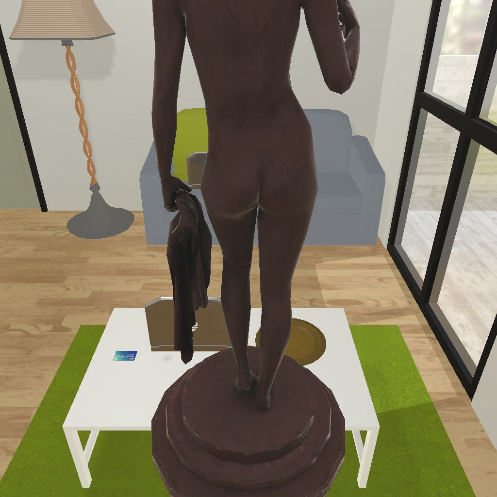

---------------------------------------------------------task: 4---------------------------------------------------------
--------------------------------------------------------------------------------------------------------------------------------------------------------------------
--------------------------------------------------------------------------------------------------------------------------------------------------------------------
Step:--------------------------------------------------------------------------8-------------------------------------------------------------------------------
----------------------------------------
VLM Prompt:
Image1:
**Instruction**
1. Analyze the provided image to identify all visible household objects, focusing on those relevant to the task description "examine the statue with the floorlamp."
2. Use the analysis of the image and the task hint "The agent must find an object of the desired type, locate and turn on a light source with the desired object in-hand." to answer the question: what is the most reasonable action in the choices for the task description "examine the statue with the floorlamp"?
4. Decide and write the answer using the template: The answer is: (i): , where i is the real number. If there is no desired object in the image, search every place based on **Initial Observation** to find the object. And if no one is exactly correct, choose a similar answer.
**Initial Observation**
You are in the middle of a room. Looking quickly around you, you can see armchair (1), coffeetable (1-2), sidetable (1), garbagecan (1), drawer (1), sofa (1), diningtable (1)
**Answer Choices**
(1): go to armchair 1
(2): go to coffeetable 1
(3): go to sidetable 1
(4): go to garbagecan 1
(5): go to drawer 1
(6): go to sofa 1
(7): go to diningtable 1
(8): put statue 1 in/on coffeetable 2
(9): examine coffeetable 2
**Answer**
Let's think step by step by following the instructions.
----------------------------------------
----------------------------------------
Original Response:
First, we analyze the image provided. We can see a statue, which is the object relevant to the task description "examine the statue with the floorlamp." In the background, we can see a floorlamp near the sofa.
Now, considering the task hint, the agent must find an object of the desired type (the statue), locate and turn on a light source (the floorlamp visible in the image) with the desired object in hand. However, the statue appears to be too large to be picked up and moved to the floorlamp. Therefore, the action of moving the statue is not feasible in this scenario.
Looking at the initial observation, there is no action that directly states "turn on the floorlamp" or "examine the statue." Since the statue cannot be moved, the agent should go to the light source (the floorlamp) to examine the statue.
However, none of the answer choices provide an option to interact with the floorlamp directly. The closest action that could be taken to fulfill the task description would be to go near the statue and the floorlamp to examine the statue.
Since "go to floorlamp" is not one of the choices, the most reasonable action from the given choices would be to go to an object that is closest to the statue and the floorlamp. Considering the layout of the room, the sofa appears to be the closest object to both the statue and the floorlamp.
The answer is: (6): go to sofa 1.
----------------------------------------
----------------------------------------
>>> Refine Original VLM Response and Get Pure Action: go to sofa 1
----------------------------------------
-----------------------------------------------------------------
Running time: 12.004250288009644 seconds
Total Money: 1.1508299999999996
-----------------------------------------------------------------
-----------------------------------------------------------------
Text Observation:You arrive at loc 5. On the sofa 1, you see a floorlamp 1, and a laptop 2.
-----------------------------------------------------------------
UNSUCCEED